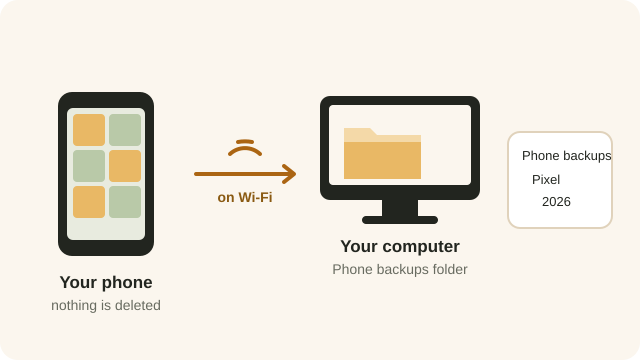
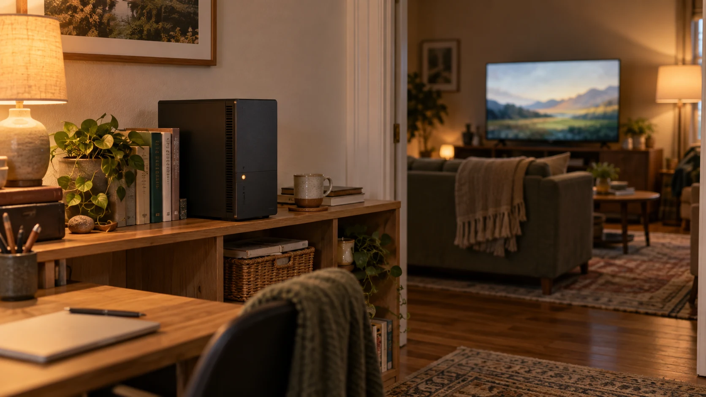

Beebo shows your photo folders on every screen, and can copy your phone’s camera to your own computer by itself. Nothing on your phone is ever deleted.
STEP 1
In Beebo on the PC, open the Photos tab and go to Folders & backup. Add a folder, and every folder inside it becomes an album.
If you add nothing, Beebo uses your Windows Pictures folder.
Folders need to be on this computer. A folder on another machine over the network isn’t supported.
Both photos and video clips are picked up, including the HEIC pictures iPhones take.
STEP 2
On that same screen, Who can use Photos lists everyone in your household with two switches each: See photos and Back up their phone.
You can always see your own photos. Everyone else sees nothing at all until you switch them on, and nobody can back up their phone to your computer unless you allow it.

PHONE BACKUP
On your Android phone, open More and tap Photo backup. Beebo explains what it will do, you agree, and from then on new photos and videos are copied to your own computer.
What it does out of the box: your Camera album only, only on Wi-Fi, videos included, and everything already in that album as well as new pictures. Every one of those is a switch you can change.
You can also tick other albums on the phone, ask it to wait until the phone is charging, or leave videos out.
Nothing on your phone is ever deleted, moved or changed. Beebo only reads. Turning backup off later keeps everything already copied to the computer.
Buttons for Back up now, Pause and Try files that failed again are on the same screen, along with a line showing its progress.
WHERE THEY LAND
Backed-up pictures go into Phone backups, then a folder named after the phone, then the year and month the picture was taken. They are normal files: no special app is needed to get at them.
A picture the computer already has is not stored a second time, even if you reinstall the app or use a new phone. Nothing already on the computer is ever written over: a different picture with the same name is saved alongside as “name (2)”.
If your computer is off, or you are out of range, the phone simply waits and carries on later — from exactly where it stopped, so a half-sent video isn’t started again from the beginning.

LOOKING AT THEM
On the phone, the TV, the PC and in a browser you get the same three views: a Timeline by month, your Albums, and just the Videos. Tap a picture for the full screen, and swipe or pinch to zoom.
On the TV. From the phone you can cast photos to a TV and start a Slideshow, which moves on every few seconds. Video clips play to the end by themselves.
On the PC there is a Show in folder button, which opens the picture’s folder in Windows.

PRIVACY
Photos go from your phone to your computer and nowhere else. Beebo keeps no copy of them. The pictures other people, the website and TVs are shown never carry the location or the camera details.
Only you, as the owner, can open the untouched original file.
There is one switch on the PC, Show where photos were taken (for you only). It is off to start with, and it shows the place to you alone.
Away from home, pictures on their way to your computer are encrypted, like everything else Beebo sends.
No. Photo backup copies, it never removes. If you want to clear space on the phone after copying, that is what Space Saver is for.
Not unless you tell it to. “Only on Wi-Fi” is on from the start.
Nothing is lost. The phone keeps the list of what it still has to send and carries on when the computer is back.
Photo backup is part of the Android app. On an iPhone you can look at the photos already on your computer through the browser.
Everything in the albums you chose, by default. There is a setting to take only new photos from now on instead.
Only the people you switch on in “Who can use Photos”. Nobody sees anything until you do.